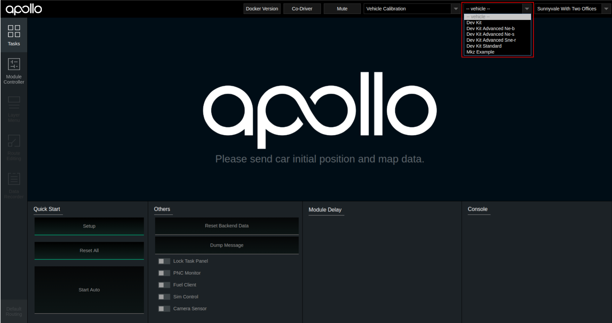
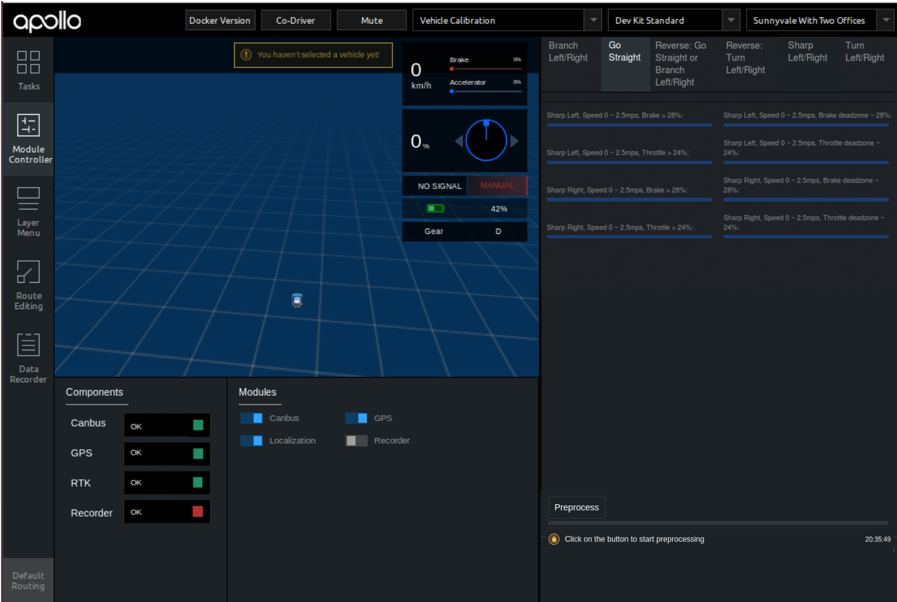
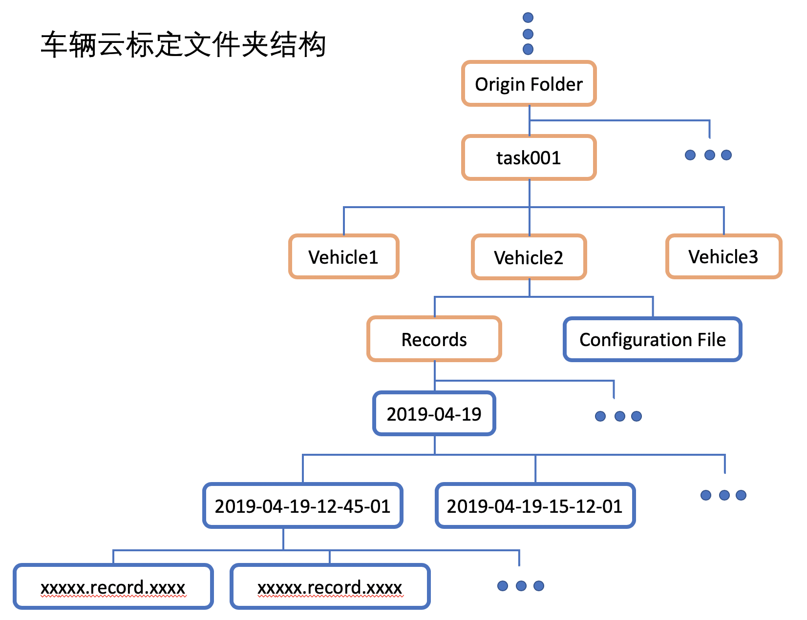

循迹搭建–车辆动力学云标定¶
概览¶
车辆云标定是通过采集车辆底盘油门踏板量、刹车踏板量、车辆速度、加速度作为车辆纵向动力模型的输入，通过机器学习的方式，生成相应车辆的踏板标定表，生成的标定表数据量大，精度高，提高车辆的控制精度。车辆踏板标定系统主要包括三个部分：
在
DreamView数据采集监视器内采集标定数据；数据本地预处理；
标定数据上传至BOS云盘，提交标定任务；
生成用于性能评估的可视化标定结果。
前提条件¶
主要步骤¶
修改标定配置文件
标定数据采集
标定任务提交
可视化结果分析
修改配置文件¶
在开始标定前，需要根据实际车辆的最大速度、速度、油门、刹车踏板的限制，进行用于车辆踏板标定的数据采集配置，来适配车辆的标定，满足标定数据能够尽可能多的覆盖车辆踏板的有效范围。我们设置了开发套件的默认车辆标定数据采集配置文件，在文件apollo/modules/calibration/data/$vehicle_type/dreamview_conf/data_collection_table.pb.txt内。对于不同的车型，配置文件的位置不同，主要由车型参数$vehicle_type决定，根据车辆铭牌信息选择对应的车型，如下表所示。
铭牌信息 |
$vehicle_type |
|---|---|
Apollo D-KIT Lite |
dev_kit |
Apollo D-KIT Standard |
dev_kit_standard |
Apollo D-KIT Advanced(NE-B) |
dev_kit_advanced_ne-b |
Apollo D-KIT Advanced(NE-S) |
dev_kit_advanced_ne-s |
Apollo D-KIT Advanced(SNE-R) |
dev_kit_advanced_sne-r |
下面以Apollo D-KIT Lite（dev_kit)举例说明。，Apollo D-KIT Lite标定配置文件在apollo/modules/calibration/data/dev_kit/dreamview_conf/data_collection_table.pb.txt内。
开发者在了解了标定文件构成后，如有需要可以自行修改需要的数据采集配置文件，通常情况下使用默认标定配置可以覆盖小车大部分踏板控制范围，建议开发者不需要单独修改此配置文件，使用默认标定配置即可。默认标定配置文件内主要设计了小车的标定条件如下：
车辆前进模型
速度条件
低速 0 ～ 2.5m/s
高速 >= 2.5m/s
油门条件
小油门 Throttle deadzone ~ 24%
大油门 Throttle >= 24%
刹车条件
缓刹车 Brake deadzone ~ 28%
急刹车 Brake >= 28%
上述的Throttle deadzone表示车辆油门踏板的不产生加速度的无效区段，一般设在车辆刚能起步的附近，开发套件给出的默认值是5%，开发者可以根据实际车辆的情况修改此参数；Brake deadzone表示车辆刹车踏板的不产生减速度的无效区段，一般设在较低的踏板开度时，开发套件给出的默认值是3%，开发者可以根据实际车辆的情况修改此参数。此参数设置在apollo/modules/calition/data/dev_kit/vehicle_param.pb.txt文件内throttle_deadzone和brake_deadzone，在标定开始前，就要先把改参数确定好，后面进行数据训练时上传的配置文件，也需要对应使用该参数。
根据如上标定条件，即可匹配出车辆的所有标定条件，共8种条件，分别为：
低速小油门
低速大油门
高速小油门
高速大油门
低速缓刹车
低速急刹车
高速缓刹车
高速急刹车
确认好上述标定条件后，通常情况下使用默认标定配置可以覆盖小车大部分踏板控制范围，如果需要修改配置文件，则需要将apollo/modules/calibration/data/dev_kit/dreamview_conf/data_collection_table.pb.txt 中Go Straight部分配置进行修改，其它部分配置代码无需修改，无需删除，通过启动DreamView后重新选择车辆后配置生效，具体修改代码如下：
frame_threshold: 20 // 帧有效阈值，连续满足标定条件的帧数大于等于该阈值时才会被记录
total_frames: 4000 // 设置每一个标定case数据帧总量，当前设置为4000帧，可根据实际情况调整，数据量越大采集标定数据时间越长
scenario {
key: "Go Straight"
value {
feature {
name: "Forward"
range {
criterion {
field: "gear_location"
comparison_operator: EQUAL
value: 1
}
}
}
feature {
name: "Steering Angle"
range {
name: "Straight"
criterion {
field: "steering_percentage"
comparison_operator: GREATER_THAN_OR_EQUAL
value: -1
}
criterion {
field: "steering_percentage"
comparison_operator: LESS_THAN
value: 1
}
}
}
feature {
name: "Speed"
range {
name: "Speed 0 ~ 2.5mps"
criterion {
field: "speed_mps"
comparison_operator: GREATER_THAN_OR_EQUAL
value: 0.2
}
criterion {
field: "speed_mps"
comparison_operator: LESS_THAN
value: 2.5
}
}
range {
name: "Speed >= 2.5mps"
criterion {
field: "speed_mps"
comparison_operator: GREATER_THAN_OR_EQUAL
value: 2.5
}
}
}
feature {
name: "Accelerator (Decelerator)"
range {
name: "Throttle deadzone ~ 24%"
criterion {
field: "throttle_percentage"
comparison_operator: GREATER_THAN_OR_EQUAL
vehicle_config: "throttle_deadzone"
}
criterion {
field: "throttle_percentage"
comparison_operator: LESS_THAN
value: 24
}
}
range {
name: "Throttle >= 24%"
criterion {
field: "throttle_percentage"
comparison_operator: GREATER_THAN_OR_EQUAL
value: 24
}
}
range {
name: "Brake deadzone ~ 28%"
criterion {
field: "brake_percentage"
comparison_operator: GREATER_THAN_OR_EQUAL
vehicle_config: "brake_deadzone"
}
criterion {
field: "brake_percentage"
comparison_operator: LESS_THAN
value: 28
}
}
range {
name: "Brake >= 28%"
criterion {
field: "brake_percentage"
comparison_operator: GREATER_THAN_OR_EQUAL
value: 28
}
}
}
}
}
标定数据采集¶
准备¶
完成配置文件修改后，将车辆移动至适合标定的场地后，启动apollo，并执行以下命令：
bash apollo.sh build_opt
bash scripts/bootstrap.sh
在浏览器打开DreamView(http://localhost:8888)，进行下述步骤：
1、选择模式，选择车型¶
在--setup mode--内，选择vehicle calibration（车辆标定）选项， 在--vehicle--选择车型，根据车辆铭牌信息选择对应的车型(见下表)，如使用Apollo D-KIT Lite，则在--vehicle--选择车型Dev Kit；
铭牌信息 |
选择车型 |
|---|---|
Apollo D-KIT Lite |
dev_kit |
Apollo D-KIT Standard |
dev_kit_standard |
Apollo D-KIT Advanced(NE-B) |
dev_kit_advanced_ne-b |
Apollo D-KIT Advanced(NE-S) |
dev_kit_advanced_ne-s |
Apollo D-KIT Advanced(SNE-R) |
dev_kit_advanced_sne-r |

2、启动标定所需要的软件模块¶
在进行标定前，需要采集包含车辆底盘、定位信息的数据作为输入，可以通过DreamView界面上的模块开关启动相关模块软件，在DreamView界面左侧边栏选择Module Controller标签，然后在主界面启动Canbus、GPS、Localization模块，如下图所示：
通过左侧Components查看Canbus、GPS、RTK状态，直到信号都达到OK才能够进行下一步。Localization启动后，需要等待1~2分钟，RTK状态才能变成OK。
3、进入采集界面¶
在确认上一步已经启动的软件模块状态OK后，点击DreamView界面左侧边栏TASK标签，在Others区域，打开Fuel Client开关启动云服务采集界面，然后在界面右上侧选择Go Straight标签，查看
如下图所示，为标定数据采集面板。
开始采集¶
在DreamView界面点击左侧边栏，选择Module Controller，这时点击Recorder开关，开始录制标定数据，这时Apollo系统就开始录制记录车辆标定数据了。
（如果在打开Recorder开关之前，右侧的数据采集器的进度条已经有一些增加，没有关系，因为在打开Recorder开关后会清除进度条的采集量，重新开始记录）
<记录数据时请注意>：建议在第一次打开Recorder开关后，一次性把所有的标定case数据全部采集完之后再关闭Recorder开关，通常一次标定采集数据所用时间为20-40分钟，根据熟练程度、场地大小等决定。
（请务必切记先打开Recorder开关，再进行标定数据采集操作，实际情况常常会因未打开Recorder开关造成数据未记录保存，影响效率）

这时，我们使用遥控器遥控车辆，根据Dreamview右侧数据采集监视器，采集相应标定条件的车辆数据，每符合标定条件一次，则进度条增加一点，直至进度条增加满为止。
待监视器内各标定条件进度条（蓝色）全部采集完成后，点击关闭Recorder开关，关闭数据记录，结束车辆标定数据采集。
这里需要注意，原则上进度条全部采集完对标定结果的生成是最佳的；但开发者也可以根据实际情况采集进度条，实际根据场地大小限制，速度限制等，比如有些case很容易采集满，有些很难，对于很不好采集到的数据可以采集到60-80%的状态也可以。

标定任务提交¶
1. 上传预处理后的数据至BOS¶
在上传数据之前，请注意以下几点：
1）标定数据预处理：
采集完车辆的标定数据，关闭Recorder后,如图所示，点击右下角「Preprocess」按钮，进行标定数据预处理。
2）查看预处理结果
点击「Preprocess」按钮后，首先对标定数据进行数据完整检查(sanity check)，如果数据完整检查不通过，在进度条下方会有不通过的错误提示（通常情况下，只要按照文档上述步骤一步步做，完整性检查就不会有错）。
预处理按钮只需要点一次，不需要多次点击。
3）生成结果如下目录
结束数据完整检查后，会提示将生成的预处理数据存入到apollo/output/task-*******，文件夹以当时处理的时间为命名，所以开发者在apollo/output目录下查找时间最近的task文件夹即可。
如下图所示，拷贝预处理完成后的文件夹task-2021-01-04-18-12，用于标定使用。
4）把生成的结果上传至BOS
在BOS的初始目录，上传上一步选择的文件夹task-2021-01-04-18-12。

2. 提交标定任务¶
首先进入Apollo云服务任务页面，选择使用百度账号登录，在左侧框中选择Apollo Fuel-->任务，点击新建任务，然后在下拉框内选择车辆标定，然后输入相应要评测的数据路径，在输入数据路径中填写到根目录，在本示例中填写为task001（因为“task001”在BOS的根目录）。如下图所示：


3. 获取标定结果及标定表¶
云标定任务完成后，将在注册的邮箱（请与商务联系）中收到一封标定结果邮件。如果标定任务成功，将包含标定表及标定结果图片。
4. 将标定表写入控制配置文件中¶
生成的标定表以
车型_calibration_table.pb.txt命名，将标定表内的标定数据为calibration_table字段，把全部数据拷贝替换至apollo/modules/calibration/data/dev_kit/control_conf.pb.txt下对应的lon_controller_conf字段下面的calibration_table段内。
注：云标定数据片段示例（截取了前4段）
calibration {
speed: 0.0
acceleration: -1.3040223121643066
command: -69.0
}
calibration {
speed: 0.0
acceleration: -1.2989914417266846
command: -65.63157894736842
}
calibration {
speed: 0.0
acceleration: -1.2903447151184082
command: -62.26315789473684
}
calibration {
speed: 0.0
acceleration: -1.2760969400405884
command: -58.89473684210526
}
结果显示¶
标定表和结果，以邮件的形式，发送至与BOS存储绑定的电子邮箱中。
油门踏板标定结果
刹车踏板标定结果

NEXT¶
车辆云标定能够提供精度较高的车辆踏板标定表，对于自动驾驶的控制精度有显著提升。当然，目前车辆的出厂一致性较好，在对控制精度要求不高的前提下，D-KIT配置表内默认的标定数据，也可以进行正常循迹等闭环自动驾驶演示。
现在，您已经完成车辆动力学标定，接下来可以开始车辆循迹演示。
常见问题¶
1.在进行车辆标定时，收到如下报错邮件，数据完整性检查出现错误¶
排查方法：
1.查看文件夹结构是否正确，一般数据预处理时，会自动生成文件夹目录，如果文件夹目录存在错误，可以手动参考如下图目录自行修改:
所有采集的标定数据都保存在apollo/data/bag/目录下，找到以年-月-日-时-分-秒命名的文件夹，根据时间找到属于车辆标定采集的数据。我们可以分批采集数据，即每一次可以采集一部分数据，这样数据会记录在不同的年-月-日-时-分-秒文件夹，（注意：默认情况下，数据采集后会在apollo/data/bag/文件夹下生成2个年月日时分秒相似的文件夹，分别以年-月-日-时-分-秒和年-月-日-时-分-秒_s命名，开发者可以不用理会_s后缀的文件夹，只需要使用年-月-日-时-分-秒文件夹内录制的标定数据即可）也可以一次全部采集，这样所有的数据都记录在同一个文件夹内，通常完成上述标定条件的车辆标定数据采集需要20分钟左右。
1）正确的文件夹结构如下图所示：

2）Origin Folder确保是BOS的根目录，确保task001目录是在BOS根目录下创建的（根目录：登录BOS存储服务器后首先看到的目录即为根目录，一般是Bucket name目录）；
3）task001、task002...代表一次车辆标定任务文件夹，即每次标定任务提交时，会训练一个task文件夹内的车辆数据；task文件夹上一层（Origin Folder）可以是BOS根目录或其他目录；
3） Vehicle1、Vehicle2...代表标定的车辆文件夹，可以根据实际情况，按照车辆名称+编号的形式命名，如ch01、ch02等。一个task文件夹下内可以包含多个Vehicle车辆文件夹，在一次任务提交中标定多个车辆；
4）Records文件内导入采集的车辆标定数据，车辆的录制数据在apollo/data/bag/目录下；
需要注意：Records文件夹下需要有2层子文件夹，第一层为大时间（年-月-日），如上图2019-04-19，第二层文件夹是具体的record文件夹（年-月-日-时-分等），如上图2019-04-19-12-45-01等，提醒大家一定要注意Records文件夹下的文件夹结构还要有2层，不然后续会影响标定找不到文件数据，文件夹结构如上图所示；
5） Configuration File即为vehicle_param.pb.txt（车辆配置文件），该文件在apollo/modules/calition/data/dev_kit文件夹内，将该文件夹下的vehicle_param.pb.txt拷贝至BOS对应的车辆标定文件夹下，如上图Vehicle2文件夹内；
6）总结上述文件夹结构：
BOS根目录 -> Task Folder ->Vehicle Folder -> Records + vehicle_param.pb.txt
2.查看是否在车辆文件夹内添加车辆配置文件（vehicle_param.pb.txt）
3.查看录制数据包内是否存在标定需要的channel数据：
通过
cyber_recorder info xxxxxx.record.xxxxx检查采集数据内是否存在下面3个channel的数据：/apollo/canbus/chassis/apollo/sensor/gnss/best_pose/apollo/localization/pose下图为正确的数据包示意

如果发现缺少了上述channel的某一项，请排查相关模块。